Check for 12 volts at the battery. Turn the ignition ON — do not start the engine. Connect the VIM to the DLC and to the laptop.
Launch Techstream and capture the main screen: software version, remaining subscription time (lower left) and the active VIM in the status bar.
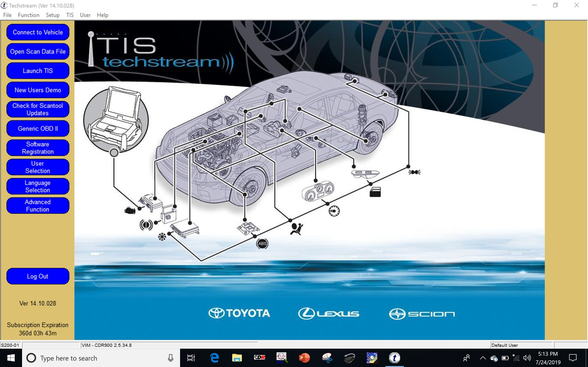
Click Setup → VIM Select, choose the interface you are using, and click OK. Capture the selection.
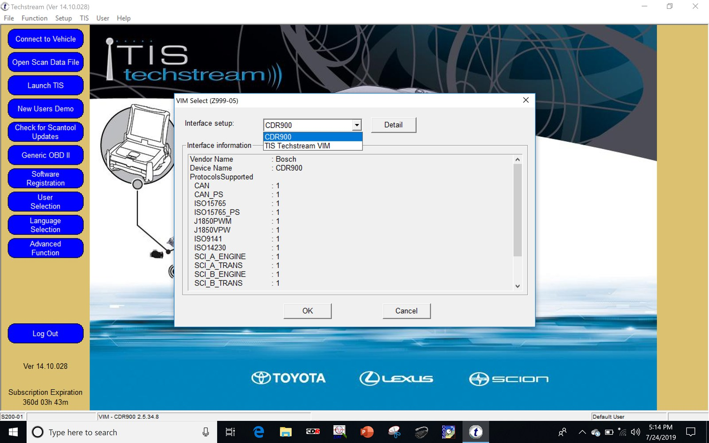
Click Connect to Vehicle. Confirm the auto-detected Division, Model, Model Year and Engine, set any options the vehicle carries, add a case note in the Memo field, and click Next. Capture this screen — it is your record that the tool was connected to this VIN.
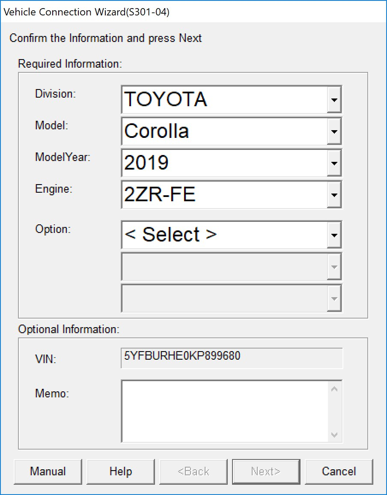
At the System Selection Menu, run Health Check to bus-scan the vehicle, save or print the report, and capture the menu as your record of the ECU inventory.
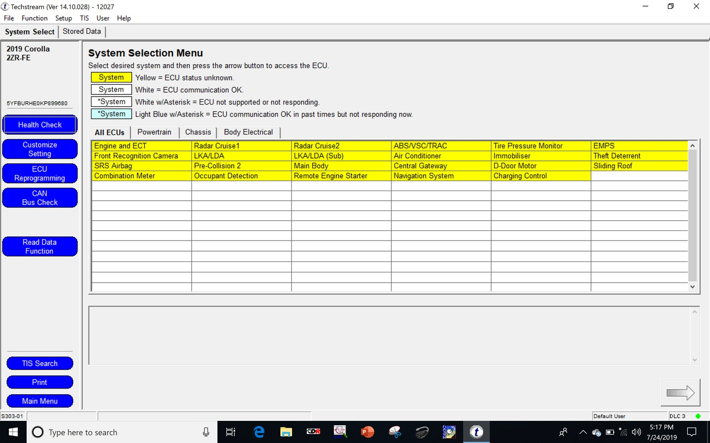
Open SRS Airbag and click Trouble Codes. Save with the disk icon and capture the current, pending and history codes. Then click Data List and save and capture that too.
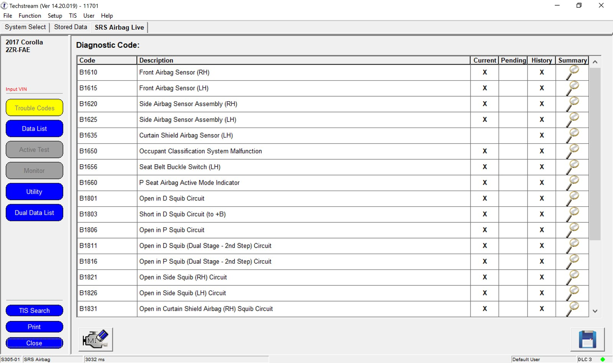
Return to the System Select tab, click Read Data Function, and choose PCS FFD Retrieval.
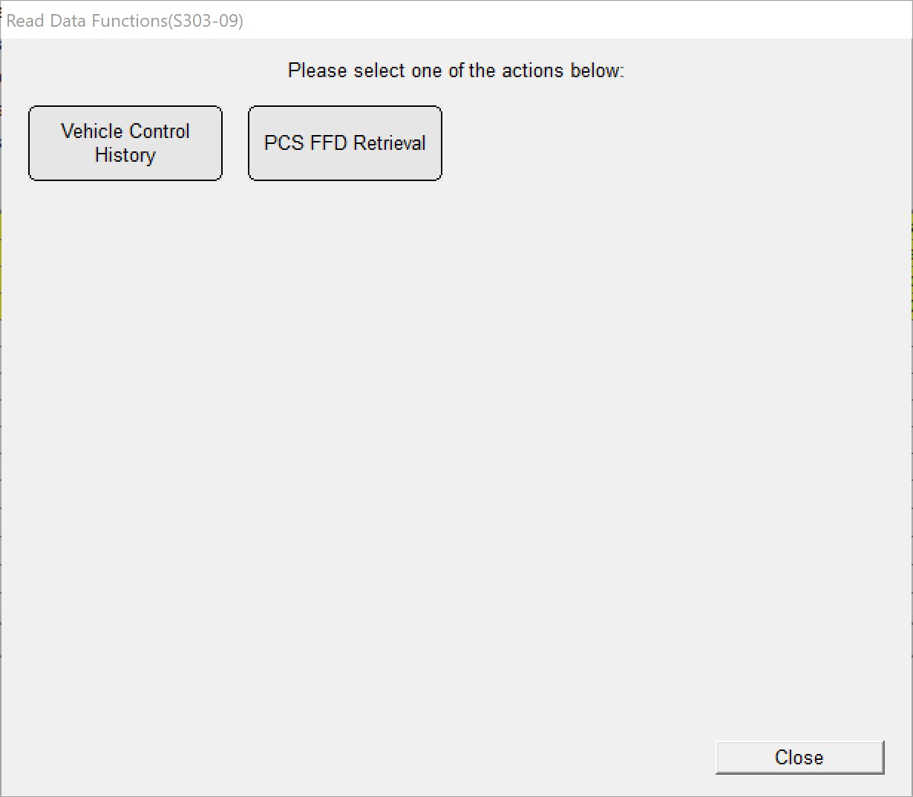
Read the legal notice, tick OK, and click Next. Capture the screen.
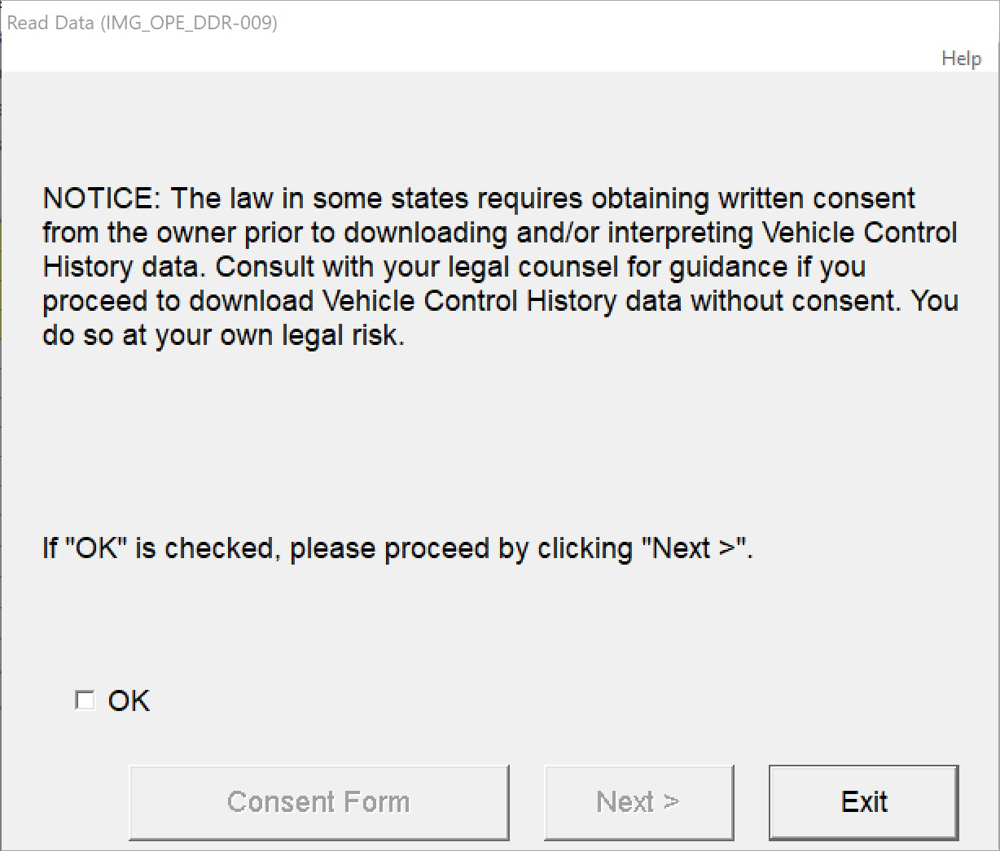
Select Read data and click Next.
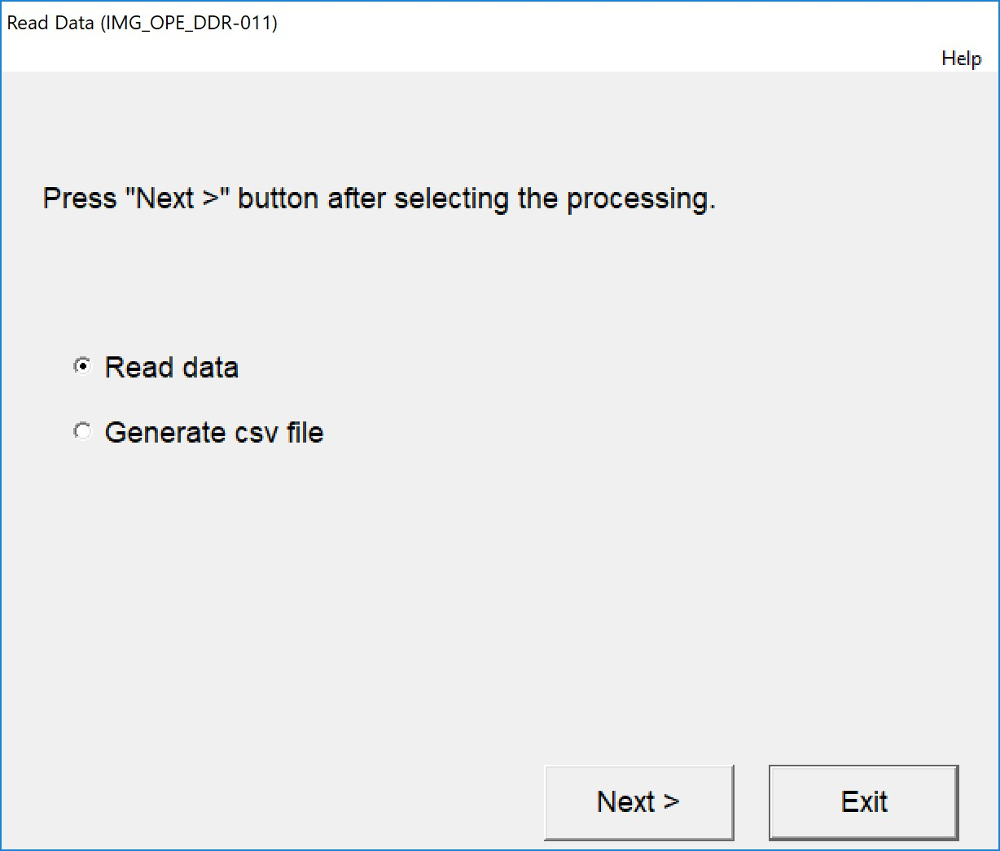
Techstream confirms it will read out Image Data, Operation FFD and Vehicle Control History, and warns the read may take 1–90 minutes. Confirm your power supply will last, then click Next.
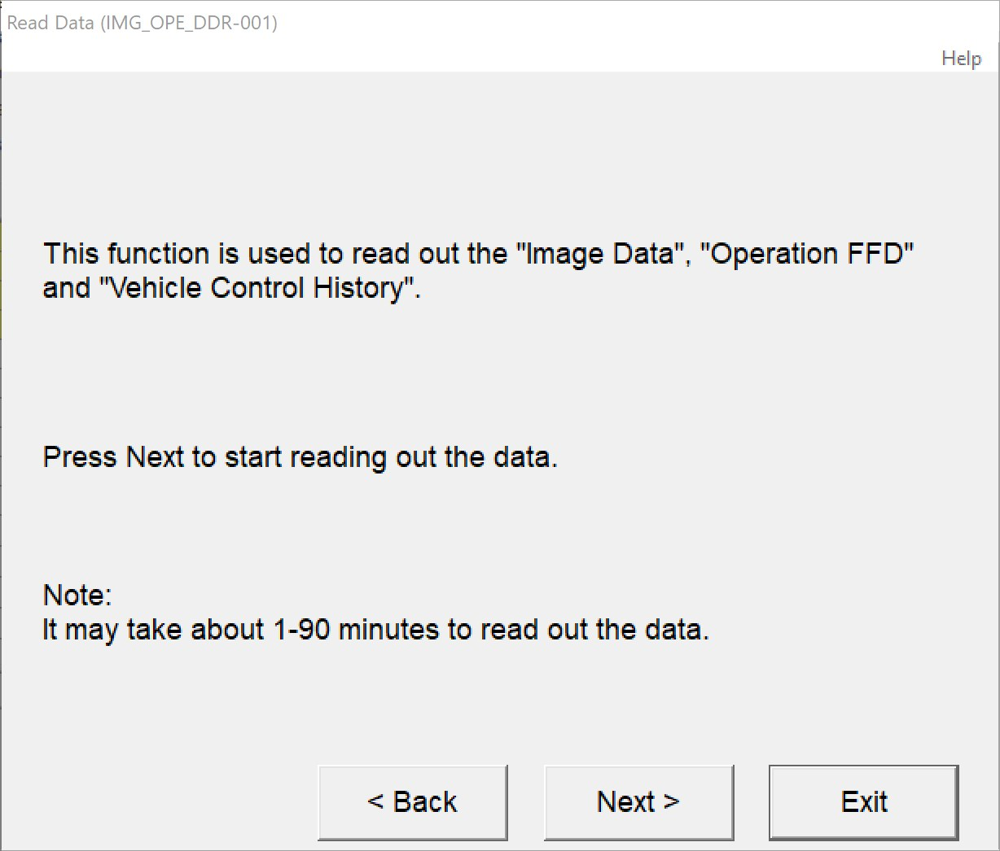
Select the image data to read and check every box offered — five categories on a TSS 2.0 vehicle, one on TSS 1.0. Capture the screen so the requested categories are recorded, then click Next.
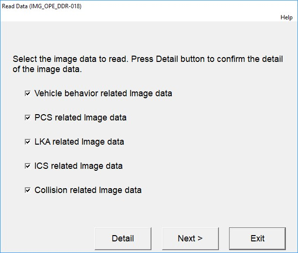
Check the estimated read time against your power and available time, then click Next to start. Do not disturb the laptop or the connection while it runs.
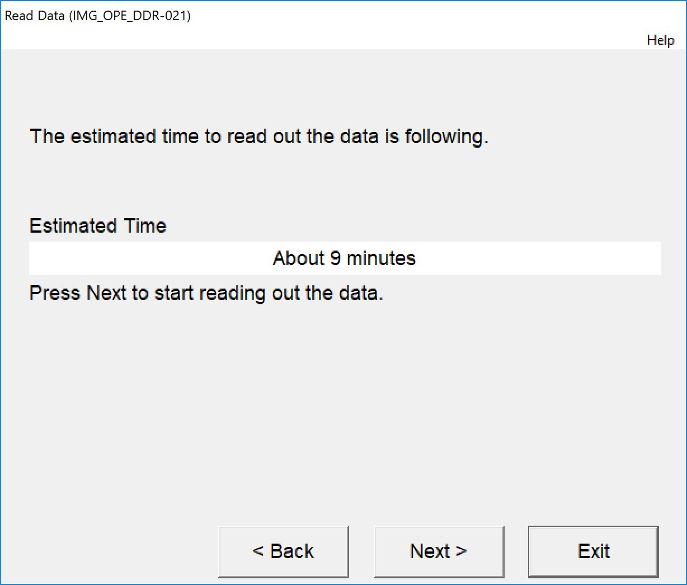
Capture the completion screen. This is the most important capture of the retrieval. It reports the status of all three data sets and names the file created. Image data : N/A means no images were stored — a finding, not a failure.
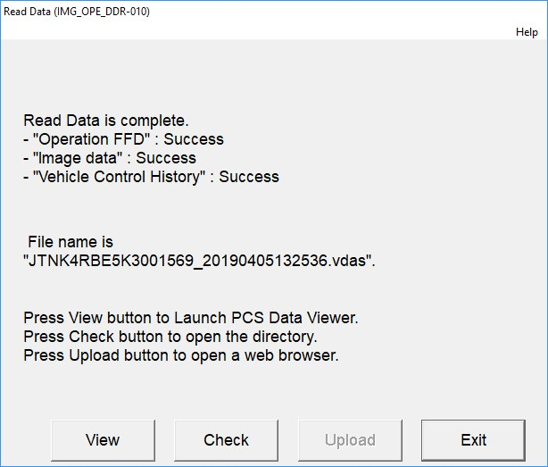
Click Check. Explorer opens at the save folder, by default C:\Users\Public\Public Documents\Techstream\PCSdata\. Confirm the .vdas file is there and note the full path.
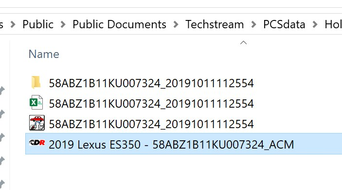
Still on scene, open the Stored Data tab to review the event list — key cycle, elapsed time, date and time, trigger, odometer and overwrite count. A circle in the Image column marks an event with camera images. Note the key cycles relevant to your investigation, and use the disk icon to export the list.
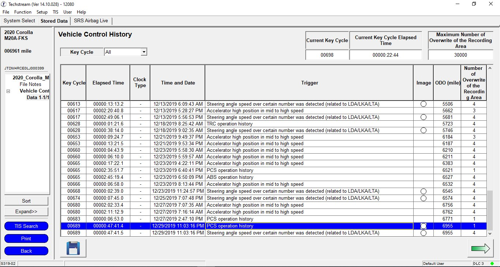
Open each relevant event to see its parameters and trigger note, and export it with the disk icon.
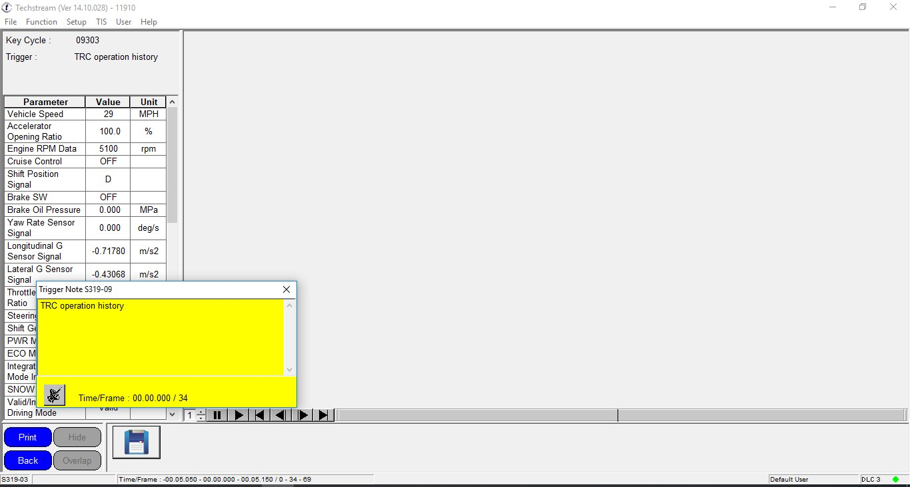
Copy the .vdas file and every screen capture to external media. Open the copy and check its size before you disconnect. Work the table below, then exit Techstream, disconnect the VIM and switch the ignition off.
Do not disconnect until every row is accounted for. Where a row is not applicable, record why in your notes rather than leaving it blank.
| No. | File | Location | Save Method |
|---|---|---|---|
| 1 | Software version and subscription expiration | Techstream main screen at launch | Screen capture |
| 2 | Interface (VIM) selection | Setup → VIM Select | Screen capture |
| 3 | Vehicle identification and VIN | Vehicle Connection Wizard | Screen capture |
| 4 | ECU inventory / System Selection Menu | System Select tab | Screen capture |
| 5 | Health Check report | System Select → Health Check | Save / print to PDF |
| 6 | SRS Airbag diagnostic trouble codes | SRS Airbag → Trouble Codes | Save (disk icon) + screen capture |
| 7 | SRS Airbag data list | SRS Airbag → Data List | Save (disk icon) + screen capture |
| 8 | Consent notice as acknowledged | Read Data (IMG_OPE_DDR-009) | Screen capture |
| 9 | Image data categories requested | Read Data image selection screen | Screen capture |
| 10 | Read-out estimated time | Read Data (IMG_OPE_DDR-021) | Screen capture |
| 11 | Read Data complete summary — status of Operation FFD, Image data and Vehicle Control History, plus the file name | Read Data (IMG_OPE_DDR-010) | Screen capture |
| 12 | Retrieval file VIN_YYYYMMDDHHMMSS.vdas | C:\Users\Public\Public Documents\Techstream\PCSdata\ | Copy to external media |
| 13 | Vehicle Control History event list | Stored Data → Vehicle Control History | Export (disk icon) to Excel + screen capture |
| 14 | Individual trigger event data, for each relevant event | VCH list → event → disk icon | Export to Excel + screen capture |
| 15 | Photographs of vehicle, VIN plate, odometer and DLC; laptop clock vs. actual time | Scene | Camera / notes |
Next, off the vehicle: load the .vdas file into PCS Data Viewer and run File → Output PCS Data to produce the CSV, image and PDF output. Do this before the TIS subscription expires — once it does, the .vdas file can no longer be opened. Those steps are in the full Toyota Techstream Imaging Guide.